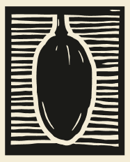

<header id="main-site-header" style="margin-top: 1rem;">
  <div class="container h-80 d-flex flex-row align-items-center justify-content-between gapx-3 gapy-2 nav fs-4"
    id="main-site-header-container">

    <a class="d-block my-2 my-md-0 ml-3" routerLink="/home" [attr.aria-label]="'home.title' | translate" role="button"
      tabindex="0">
      
    </a>

    <!-- Logo and navbar wrapper -->
    <div id="header-left" [attr.role]="(isMobile$ | async) ? 'navigation' : 'presentation'"
      [attr.aria-label]="(isMobile$ | async) ? ('nav.main.description' | translate) : null"
      class="h-100 flex-fill d-flex flex-row flex-nowrap justify-content-start align-items-center gapx-3">
      <nav *ngIf="(isMobile$ | async) !== true"
        class="navbar navbar-expand p-0 align-items-stretch align-self-stretch flex-grow-1 flex-shrink-1"
        id="desktop-navbar" [attr.aria-label]="'nav.main.description' | translate">
        <ds-navbar></ds-navbar>
      </nav>
    </div>

    <!-- Search bar and other menus -->
    <div id="header-right"
      class="h-100 d-flex flex-row flex-nowrap flex-shrink-0 justify-content-end align-items-center gapx-1 ml-auto fs-4">
      <ds-search-navbar></ds-search-navbar>
      <div role="toolbar" class="h-100 d-flex flex-row flex-nowrap align-items-center gapx-1">
        <ds-lang-switch></ds-lang-switch>
        <ds-context-help-toggle></ds-context-help-toggle>
        <ds-impersonate-navbar></ds-impersonate-navbar>
        <ds-auth-nav-menu></ds-auth-nav-menu>
      </div>

      <div id="mobile-navbar-toggler" class="d-block d-lg-none ml-3" *ngIf="(isMobile$ | async)">
        <button id="navbar-toggler" class="btn" type="button" (click)="toggleNavbar()"
          [attr.aria-label]="'nav.toggle' | translate" aria-controls="collapsible-mobile-navbar"
          [attr.aria-expanded]="(isNavBarCollapsed$ | async) !== true">
          <span class="fas fa-bars fa-fw fa-xl toggler-icon" aria-hidden="true"></span>
        </button>
      </div>

    </div>

  </div>
</header>